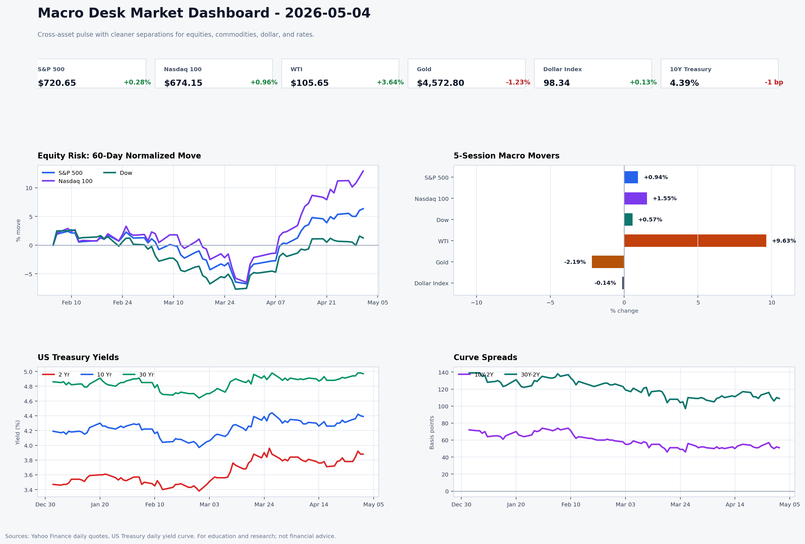
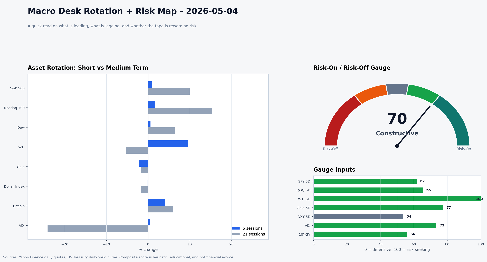

Daily Macro Brief — 2026-05-04
Status: U.S. cash markets open; data fractures still driven by oil supply fears, sticky price signals and the Fed’s ‘wait-and-see’ stance.
Executive Take
Oil rally kept early May risk sentiment half-honored: S&P 500 and Nasdaq rallied modestly while the Dow lagged, yet WTI ripped toward $106 and gold pulled back—a reminder that higher energy prices and the Fed’s hawkish hold keep policy risk top of mind even as investors lean back into tech.
What Moved
- Equities: Macro desk snapshot (S&P ETF $720.65, +0.28%; Nasdaq ETF $674.15, +0.96%; Dow ETF $495.02, −0.33%) capture Friday’s rebound and Monday’s drift. (See
macro-desk/data/2026-05-04-snapshot.csv.) - Commodities: WTI $105.65 (+3.64%) after renewed Strait of Hormuz jitters and the UAE’s OPEC + exit lifted the risk premium; gold retreated to $4,573 (−1.2%). VIX ticked to 18.1 (+6.5%), reflecting a pinch of unease.
- Rates & FX: 2Y=3.88%, 10Y=4.39%, 30Y=4.97% (tiny drops vs. 5/1). Dollar Index held near 98.34 (+0.13%), echoing the Fed’s steady-but-wary tone.
Why It Matters
- The Fed left the target range at 3.50%–3.75% on April 29, flagged Middle East energy risk and showed squabbling dissents; the tone remains “data dependent” rather than easing, so this week’s jobs/CPI/PPI prints will be judged against a backdrop of rising oil and receding gold, both of which keep headline inflation risks alive. Reuters and Euronews.
- Across the Atlantic, the ECB held at 2.0% while euro-area inflation stayed at ~3% (core ~2.2%), so European policy remains sticky even as growth slows. This keeps the dollar resilient and limits pace of global risk-on rallies.
- China’s manufacturing PMI climbed to 52.2 in April (vs. 50.8), keeping yuan-sensitive exporters and commodity consumers on guard for a re-acceleration of demand. TradingEconomics
Watch Next
1. May 8 (08:30 ET): U.S. Employment Situation (April)—any surprise in payrolls or wages could tilt the Fed narrative back toward hikes or cement the pause.
2. May 12 (08:30 ET): U.S. CPI (April)—ISM Prices already spiked; a follow-through would keep the window to cuts closed.
3. May 13 (08:30 ET): U.S. PPI (April)—upstream price momentum plus oil pushes may show up before CPI.
24/7 Tape Signal
Hyperliquid’s 24-hour data still shows extreme altcoin activity (see macro-desk/data/2026-05-04-hyperliquid-24-7.csv): TST exploded +72.6% on tiny liquidity, ZEC jumped 5.1%, and funding sticks close to neutral/positive across BTC, ETH and smaller names. No large funding stress yet—this is a risk-on wobble that may dampen quickly unless energy/FX cues shift.
One Chart Idea
Use the market-dashboard (see macro-desk/charts/2026-05-04-market-dashboard.png) as a base: overlay the 5-session macro movers (WTI vs. Nasdaq vs. S&P) with the 10Y‑2Y curve to show how higher oil is coinciding with curve flattening and tech strength. It tells the growth-vs.-inflation story in one view.
Publish-Ready Short Post
Oil’s price squeeze is the heartbeat for late-April Fed suspense. Equities pulled back into a mixed tape while WTI jumped +3.6% (Strait of Hormuz + UAE exit) and gold slipped ~1.2%. The Fed held 3.50%‑3.75%, the ECB kept 2% with 3% headline inflation, and China’s PMI rebounded to 52.2, so the cash calendar now focuses on jobs (May 8), CPI (May 12) and PPI (May 13). The Macro Desk dashboard shows where tech resilience, oil, and the curve intersect—watch for whether energy/labor data keeps the Fed in wait mode or forces a rethink.
Sources
macro-desk/data/2026-05-04-snapshot.csv(equities, commodities, yields, VIX)macro-desk/data/2026-05-04-hyperliquid-24-7.csv(Hyperliquid 24/7 tape)macro-desk/charts/2026-05-04-market-dashboard.png(chart-led dashboard)- Reuters: Fed hold & hawkish-tone summary — https://www.reuters.com/business/fed-likely-hold-rates-steady-what-may-be-last-meeting-powell-era-2026-04-29/
- Euronews: ECB holds at 2%, inflation 3% — https://www.euronews.com/business/2026/04/30/ecb-holds-rates-at-2-as-inflation-rises-and-eurozone-growth-slows
- TradingEconomics: China manufacturing PMI April 2026 — https://tradingeconomics.com/china/manufacturing-pmi
- TradingEconomics: Gold price May 4, 2026 (for extra color)—https://tradingeconomics.com/commodity/gold
- Reuters: Oil supply risk via Hormuz, UAE exit — https://www.reuters.com/business/energy/oil-prices-rise-no-end-iran-war-stand-off-seems-sight-2026-04-28/